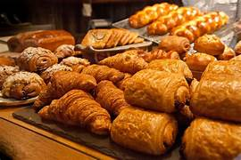

About Us
Our Story: Passion, Tradition, and Community at Sweet Delights Bakery
Sweet Delights Bakery is not just a bakery; it’s a legacy of taste, tradition, and community. Founded over two decades ago by master baker Emily Johnson, our bakery has grown from a small, family-run establishment to a cornerstone of our town’s culinary landscape. Emily’s dedication to the art of baking and her unwavering commitment to quality have shaped every aspect of our business, from our handcrafted recipes to our warm, inviting atmosphere.
What sets Sweet Delights Bakery apart is our passion for excellence. We take pride in using only the highest quality ingredients, sourced from trusted suppliers who share our values of sustainability and ethical sourcing. Our team of talented bakers and pastry chefs brings years of experience and creativity to every creation, ensuring that each item that leaves our kitchen is a masterpiece of flavor and presentation.

But beyond our commitment to exceptional baking, Sweet Delights Bakery is deeply rooted in our community. We believe in giving back and supporting local initiatives, whether through charitable donations or participating in community events. We cherish the relationships we’ve built with our customers over the years and strive to make every visit to our bakery a delightful experience that keeps you coming back.
Welcome to Sweet Delights Bakery, where tradition meets innovation, and every bite tells a story of passion and craftsmanship.